Following are few examples included in the dms2dfe package.
We used a dataset from Melnikov et. al., where DMS of aminoglycoside-3 -phosphotransferase-II (APH(3’)II), an aminoglycosde resistant gene was carried out. Here we use a subset of data in which mutants were selected for resistance against Kanamicin at 1:4 MIC of wild type (sample KKA2_S1_Kan14_L1) and at 1:1 MIC of wild type (sample KKA2_S1_Kan11_L1). In this analysis we start from unaligned .fastq files, find variants, estimate fitness and ultimately compare fitness of mutants in two selections. Additionally a classification model would be generated indicating possible factors responsible for observed changes in Distribution of Fitness Effects.
The dataset for this example can be downloaded by a bash script located in dms2dfe/test_dataset.
cd dms2dfe/test_dataset
./get_data_APH2_Melnikov_et_al_2014
The input files (.fastq) would be downloaded in dms2dfe/test_dataset/APH2_Melnikov_et_al_2014
Following is the configuration used for analysis.
| varname | description | input | default |
|---|---|---|---|
| host | Host name for assigning codon table [coli | yeast | sapiens] | sapiens | |
| Ni_cutoff | Cut off for frequency per mutant | 8 | |
| Q_cutoff | Cut off for Phred score quality | 30 | |
| norm_type | Type of normalization across samples [wild: wrt wild type | syn : wrt synonymous mutations | none : fold change serves as fitness] | wild | |
| fsta_fh | Path to reference fasta file | APH2_Melnikov_et_al_2014/aph_wt_nt_cctmr.fasta | found in project directory |
| pdb_fh | Path to pdb file | APH2_Melnikov_et_al_2014/1ND4.pdb | found in project directory |
| alignment_type | Alignment type [loc:local | glob:global] | loc | |
| cores | Number of cores to be used | 8 | |
| active_sites | Optional: residue numbers of active sites (space delimited) eg. 68<SPACE>192 | ||
| dssp_fh | Optional: path to dssp module | /dms2dfe_dependencies/dssp/dssp-2.0.4-linux-amd64 | |
| trimmomatic_fh | Optional: path to trimmomatic source (.jar) file | /dms2dfe_dependencies/trimmomatic/trimmomatic-0.33.jar | |
| cctmr | Optional: if reference sequence is concatamer (space delimited) eg. 1<SPACE>265<SPACE>268<SPACE>532” | 1 265 268 532 | |
| bowtie2_fh | Optional: path to bowtie2 source file | bowtie2 | |
| samtools_fh | Optional: path to samtools source file | samtools |
| varname | fhs_1 | fhs_2 |
|---|---|---|
| KKA2_Bkg1 | APH2_Melnikov_et_al_2014/data_input/SRR1292901_1.fastq | APH2_Melnikov_et_al_2014/data_input/SRR1292901_2.fastq |
| KKA2_S1_Kan14_L1 | APH2_Melnikov_et_al_2014/data_input/SRR1292881_1.fastq | APH2_Melnikov_et_al_2014/data_input/SRR1292881_2.fastq |
| KKA2_S1_Kan11_L1 | APH2_Melnikov_et_al_2014/data_input/SRR1292709_1.fastq | APH2_Melnikov_et_al_2014/data_input/SRR1292709_2.fastq |
| unsel | sel_1 |
|---|---|
| KKA2_Bkg1 | KKA2_S1_Kan14_L1 |
| KKA2_Bkg1 | KKA2_S1_Kan11_L1 |
| ctrl | test_1 |
|---|---|
| KKA2_S1_Kan14_L1 | KKA2_S1_Kan11_L1 |
| aasi | Conservation score (ConSurf) | Solvent accessibility (PopMusic) | Average $DeltaDelta G$ per sequence position (PopMusic) | Sum of negative contributors (PopMusic) | Sum of positive contributors (PopMusic) |
|---|---|---|---|---|---|
| 1 | -0.738 | nan | nan | nan | nan |
| 2 | 0.004 | nan | nan | nan | nan |
| 3 | 0.248 | nan | nan | nan | nan |
| 264 | -1.044 | 22.66 | 1.48 | 0 | 28.2 |
To run dms2dfe on the dataset simply fire following command.
import dms2dfe
dms2dfe.pipeline.main("APH2_Melnikov_et_al_2014")
With a successful run of dms2dfe, output visualizations for sample KKA2_S1_Kan11_L1 should look like following.
Amino acid level Mutation matrix of fitness values
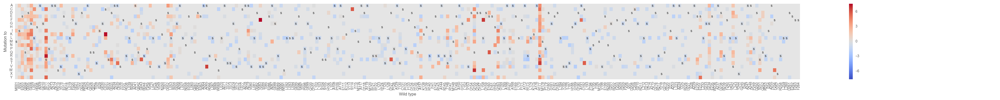In this plot positions with no mutation (eg. A to A) are shown in white.
Codon level Mutation matrix of fitness values
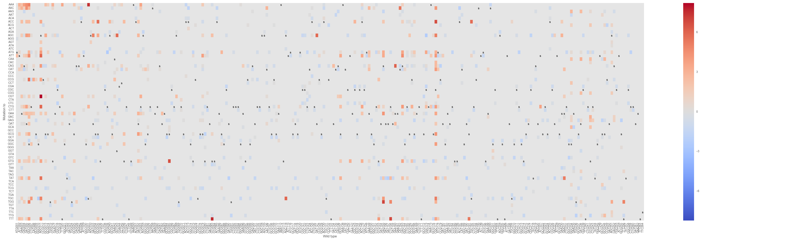In this plot positions with no mutation (eg. AAA to AAA) are shown in white.
Distribution of fitness
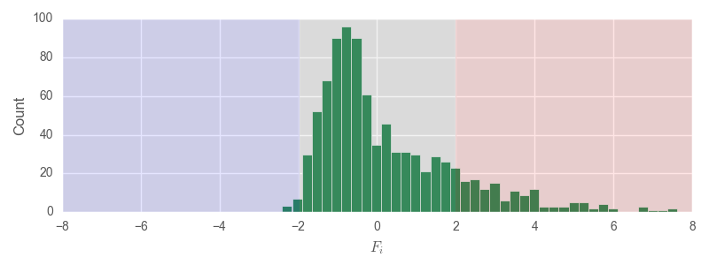Fitness values projected on PDB structure
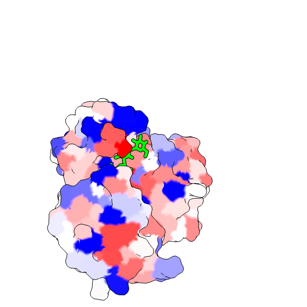Substitution matrix based on Fitness values
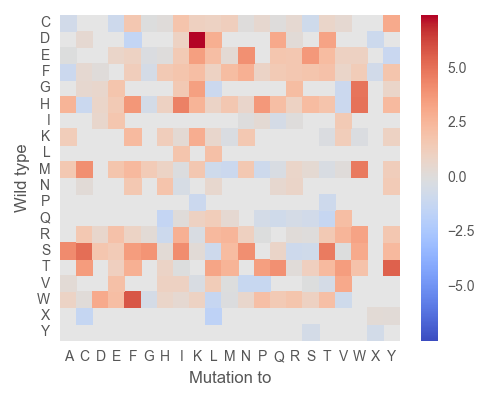ROC curve of classification model of fitness values
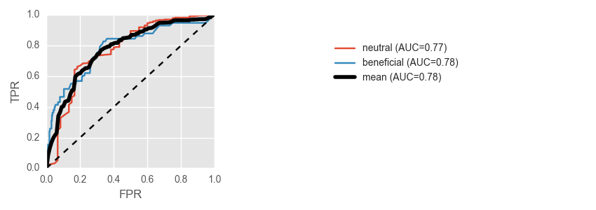Top 20 features high high relative importance in classification model of fitness values
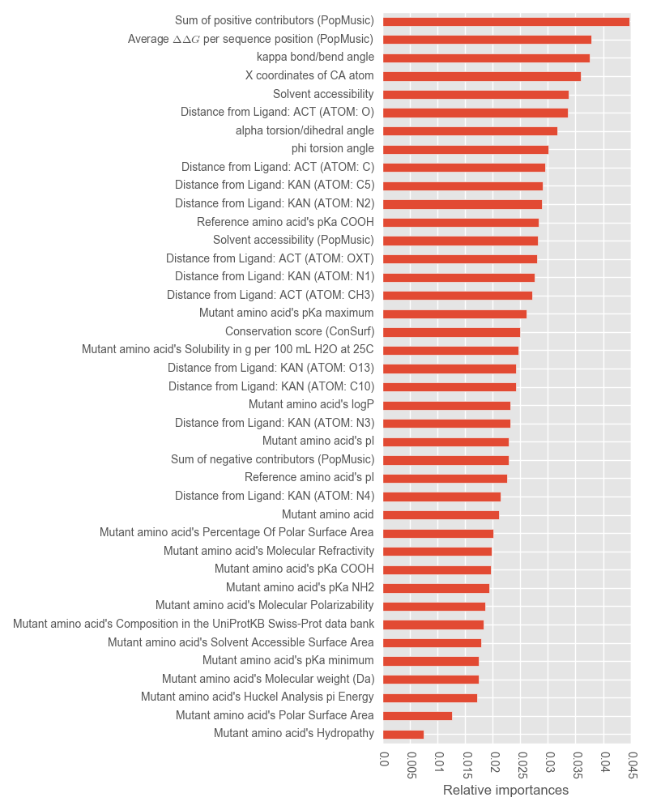We used a dataset from Firnberg et. al., where DMS of E. coli TEM-1 beta-lactamase, an ampicilin resistant gene was carried out. Here we use a subset of data in which mutants were selected for resistance against Ampicilin at 256 ug/ml (sample Amp256) and at 512 ug/ml (sample Amp512). In this analysis we start from codon level mutation matrix and estimate fitness and ultimately compare fitness of mutants in two selections. Additionally a classification model would be generated indicating possible factors responsible for observed changes in Distribution of Fitness Effects.
The dataset for this example can be downloaded by a python script located in dms2dfe/test_dataset.
cd dms2dfe/test_dataset
./get_data_TEM1_Firnberg_et_al_2014.py
Codon level mutation matrices (.mat_cds) would be downloaded in dms2dfe/test_dataset/APH2_TEM1_Firnberg_et_al_2014
Following is the configuration used for analysis.
| varname | description | input | default |
|---|---|---|---|
| host | Host name for assigning codon table [coli | yeast | sapiens] | e_coli | |
| Ni_cutoff | Cut off for frequency per mutant | 0 | 8 |
| Q_cutoff | Cut off for Phred score quality | 30 | |
| norm_type | Type of normalization across samples [wild: wrt wild type | syn : wrt synonymous mutations | none : fold change serves as fitness] | syn | wild |
| fsta_fh | Path to reference fasta file | TEM1_Firnberg_et_al_2014/btem.fasta | found in project directory |
| pdb_fh | Path to pdb file | TEM1_Firnberg_et_al_2014/btem.pdb | found in project directory |
| alignment_type | Alignment type [loc:local | glob:global] | loc | |
| cores | Number of cores to be used | 8 | |
| active_sites | Optional: residue numbers of active sites (space delimited) eg. 68<SPACE>192 | 68 166 | |
| dssp_fh | Optional: path to dssp module | /home/kclabws1/Documents/propro/writ/prjs/1_dms_software/progs/dms2dfe_dependencies/dssp/dssp-2.0.4-linux-amd64 | |
| trimmomatic_fh | Optional: path to trimmomatic source (.jar) file | /home/kclabws1/Documents/propro/writ/prjs/1_dms_software/progs/dms2dfe_dependencies/trimmomatic/trimmomatic-0.33.jar | |
| cctmr | Optional: if reference sequence is concatamer (space delimited) eg. 1<SPACE>265<SPACE>268<SPACE>532” | ||
| bowtie2_fh | Optional: path to bowtie2 source file | bowtie2 | |
| samtools_fh | Optional: path to samtools source file | samtools |
| varname | fhs_1 | fhs_2 |
|---|---|---|
| Amp0.25 | TEM1_Firnberg_et_al_2014/data_input/Amp0.25.mat_mut_cds | |
| Amp256 | TEM1_Firnberg_et_al_2014/data_input/Amp256.mat_mut_cds | |
| Amp512 | TEM1_Firnberg_et_al_2014/data_input/Amp512.mat_mut_cds |
| unsel | sel_1 | sel_2 |
|---|---|---|
| Amp0.25 | Amp256 | Amp512 |
| ctrl | test_1 |
|---|---|
| Amp256 | Amp512 |
| aasi | Conservation score (ConSurf) | Solvent accessibility (PopMusic) | Average $DeltaDelta G$ per sequence position (PopMusic) | Sum of negative contributors (PopMusic) | Sum of positive contributors (PopMusic) |
|---|---|---|---|---|---|
| 26 | -0.523 | 44.64 | 0.4 | 0 | 7.62 |
| 27 | 1.027 | 57.72 | 0.16 | -0.56 | 3.66 |
| 28 | 1.393 | 56.57 | 0.15 | -0.39 | 3.29 |
| 290 | -0.596 | 35.48 | 1.09 | 0 | 20.63 |
To run dms2dfe on the dataset simply fire following command.
import dms2dfe
dms2dfe.pipeline.main("TEM1_Firnberg_et_al_2014")
With a successful run of dms2dfe, output visualizations for sample Amp256 should look like following.
Amino acid level Mutation matrix of fitness values
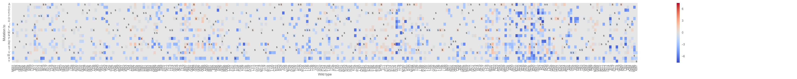In this plot positions with no mutation (eg. A to A) are shown in white.
Distribution of fitness
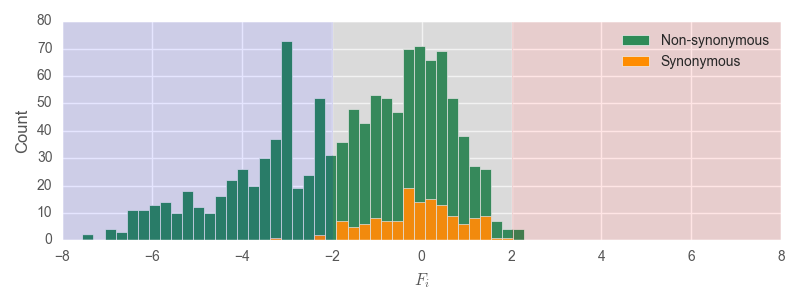Fitness values projected on PDB structure
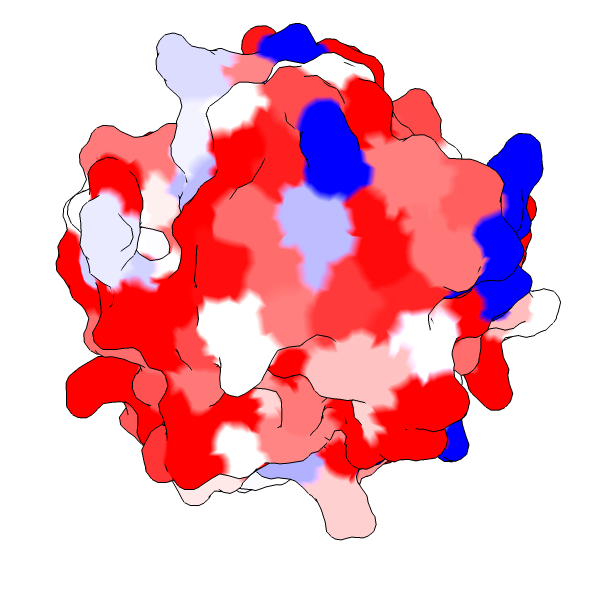Substitution matrix based on Fitness values
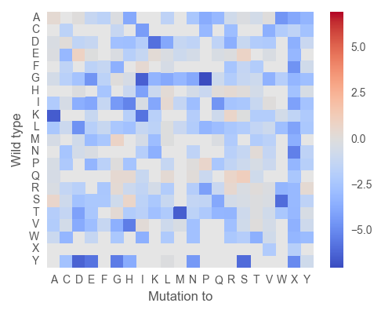ROC curve of classification model of fitness values
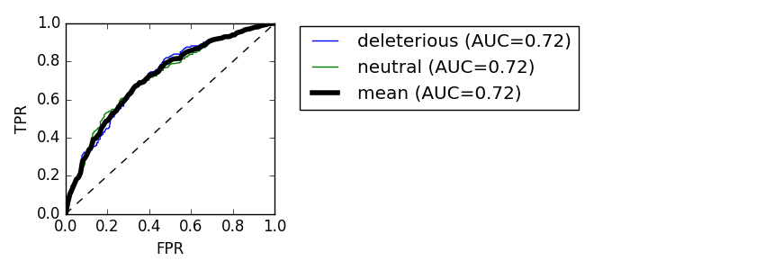Top 20 features high high relative importance in classification model of fitness values
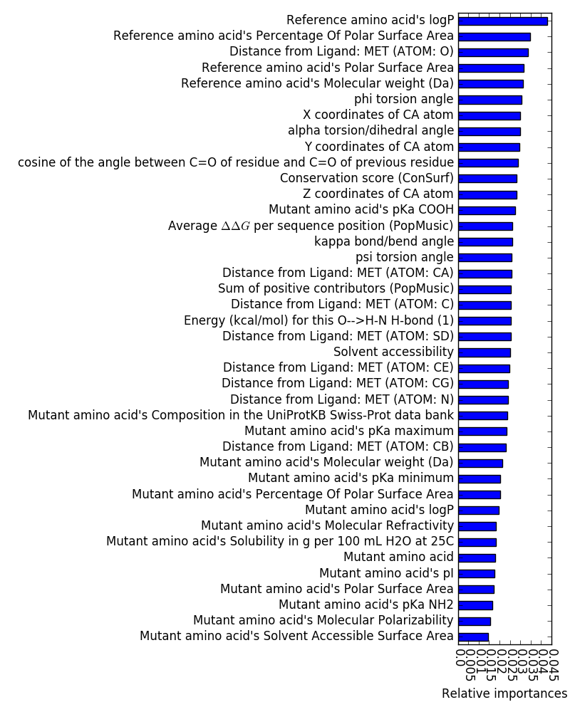| [Melnikov] | Melnikov, A., P. Rogov, L. Wang, A. Gnirke, and T.S. Mikkelsen. 2014. Comprehensive mutational scanning of a kinase in vivo reveals substrate-dependent fitness landscapes. Nucleic Acids Research. 42: 1–8. |
| [Firnberg] | Firnberg, E., J.W. Labonte, J.J. Gray, and M. Ostermeier. 2014. A comprehensive, high-resolution map of a Gene’s fitness landscape. Molecular Biology and Evolution. 31: 1581–1592. |